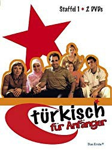

")
 gesehen am 11.08.2019
gesehen am 11.08.2019 
 IMDB-Wertung: 7.5 / 10
IMDB-Wertung: 7.5 / 10  Metascore:
Metascore: 
Türkisch für Anfänger begleitet die Multikulti-Familie Schneider-Öztürk auf ihren Irrungen und Wirrungen im heutigen Berlin. Da ist die 16-jährige Lena, die mit ihrer Mutter, der Psychotherapeutin Doris, und ihrem jüngeren Bruder Nils zusammen lebt. Als sich Doris in den türkischen Kriminalkommissar Metin verliebt und mit ihm zusammen zieht, steht Lenas Leben Kopf: Sie muss ihr Zimmer mit der neuen Stiefschwester Yağmur, einer streng gläubigen Muslimin, teilen und sich mit ihrem 17-jährigen Stiefbruder Cem arrangieren, der sich der Tradition zu Folge für seine neue Schwester verantwortlich fühlt. Als die beiden auch noch beginnen füreinander Gefühle zu entwickeln, ist das Familienchaos perfekt.
Jahr: 2006
Dauer: 24 Minuten
FSK: 12
Land: Deutschland Studio: ARDTonspuren:
Untertitel:
Auflösung: SD (640x352) Größe: 234 MB
Regisseur: Oliver Schmitz, Edzard Onneken, Christian Ditter
Drehbuch: Bora Dagtekin, Benedikt Gollhardt, Vivien Hoppe, Sathyan Ramesh, Bülent Aladag
Soundtrack:
Darsteller:
 Josefine Preuß als Lena Schneider, 52 episodes, 2006-2008
Josefine Preuß als Lena Schneider, 52 episodes, 2006-2008 Anna Stieblich als Doris Schneider, 52 episodes, 2006-2008
Anna Stieblich als Doris Schneider, 52 episodes, 2006-2008 Elyas M'Barek als Cem Öztürk, 52 episodes, 2006-2008
Elyas M'Barek als Cem Öztürk, 52 episodes, 2006-2008 Adnan Maral als Metin Öztürk, 52 episodes, 2006-2008
Adnan Maral als Metin Öztürk, 52 episodes, 2006-2008 Pegah Ferydoni als Yagmur Öztürk, 52 episodes, 2006-2008
Pegah Ferydoni als Yagmur Öztürk, 52 episodes, 2006-2008 Arnel Taci als Costa Papavassilou, 46 episodes, 2006-2008
Arnel Taci als Costa Papavassilou, 46 episodes, 2006-2008 Cristina do Rego als Katharina Kuhn, 16 episodes, 2008
Cristina do Rego als Katharina Kuhn, 16 episodes, 2008 Nursel Köse als Gülcan Süleman, 4 episodes, 2007
Nursel Köse als Gülcan Süleman, 4 episodes, 2007 Fahri Yardim als Erol, 1 episode, 2008
Fahri Yardim als Erol, 1 episode, 2008 Aylin Tezel als Asuman, 1 episode, 2008
Aylin Tezel als Asuman, 1 episode, 2008 Ursela Monn als Diamantenvertreterin, 1 episode, 2008
Ursela Monn als Diamantenvertreterin, 1 episode, 2008 Steffen Münster als Chef Imbiss, 1 episode, 2008
Steffen Münster als Chef Imbiss, 1 episode, 2008 David Bredin als Redakteur, 1 episode, 2008
David Bredin als Redakteur, 1 episode, 2008Datei: X:\NEU\Türkisch für Anfänger\S01\Türkisch fuer Anfänger S01E01 Die in der ich meine Freiheit verliere.avi seit 29.07.2019
 Es gibt insgesamt 187 Filme in der Gruppe 'NEU'
Es gibt insgesamt 187 Filme in der Gruppe 'NEU'